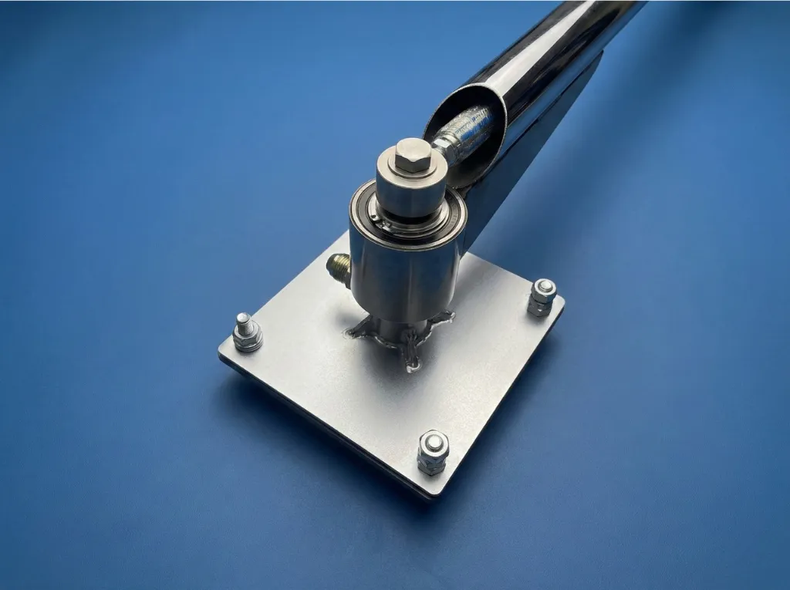

Oto Yıkama Pervanesi Boom Tekli Z
Self Servis İstasyonlar İçin Krom Boom Z Pergel
Self servis oto yıkama istasyonlarının vazgeçilmezi olan boom tekli Z pervane modelimiz; 15 yıllık sektörel tecrübemiz ve mühendislik birikimimizle geliştirilmiştir. Toplam 154 cm uzunluğu ile geniş kapsama alanı sunan Z kol (boom) tasarımı, hortumun tavandan serbestçe sarkmasını ve 360° dönmesini sağlar.
Piyasa standartlarına tam uyumlu olarak üretilen bu krom boom Z pervane, dayanıklı paslanmaz çelik yapısı ve kusursuz dönüş mekanizması ile en yoğun self servis istasyonlarında dahi uzun yıllar sorunsuz performans sergiler.
Öne Çıkan Özellikler:
- Boom Z Tasarımı: 154cm ergonomik Z kol (boom) ile geniş hareket alanı.
- 360° Dönüş: Krom boom pergel mekanizması, hortum dolanmasını önler.
- Krom Kaplama: Paslanmaz çelik yüzey, dış mekân koşullarına tam dayanıklı.
- Self Servis Uyumlu: Tavan, direk veya duvara monte edilebilir.
- 15 Yıl Tecrübe: Üretim birikimimizle optimize edilmiş yüksek kalite.
- Dayanıklılık: Yoğun kullanım şartlarına ve dış etkenlere karşı ekstra direnç.
Kullanım Alanları
Self servis oto yıkama kabinleri, jetonlu oto yıkama sistemleri ve tek hortumlu profesyonel yıkama noktaları için idealdir. Boom tekli Z pervane, compact tasarımıyla dar alanlar için de uygundur.
Oto Yıkama Pervanesi İçerik Kümesi
Model seçimi ve fiyat karşılaştırmasını tek merkezden görmek için aşağıdaki sayfalara geçin.